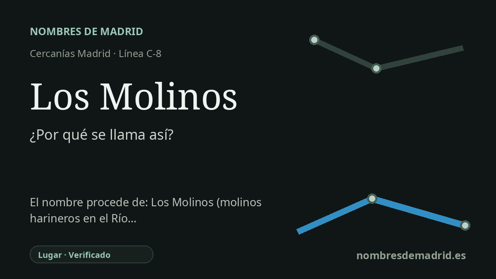

Publicado el · Investigación de Nombres de Madrid · Cómo verificamos cada origen · 6 fuentes consultadas
Respuesta rápida
La estación de Los Molinos se llama como el municipio madrileño al que da servicio. El topónimo alude a antiguos molinos harineros movidos por el agua del Guadarrama, una actividad documentada por la historia local y por el Catastro de Ensenada de 1751.
La historia del nombre
La estación de Los Molinos toma su nombre del municipio de Los Molinos, en la Sierra de Guadarrama. El nombre ferroviario es, por tanto, un topónimo local y no una dedicatoria personal: la parada identifica el pueblo al que sirve dentro del recorrido de Cercanías C-8.
El origen más profundo del topónimo está en el antiguo paisaje molinero del valle alto del Guadarrama. La historia local explica que junto al río se asentaron familias de molineros y que la zona empezó a ser conocida de forma descriptiva como 'los molinos'. En este caso se trataba de molinos harineros, movidos por agua, destinados a transformar cereales en harina.
La pista documental es temprana, aunque debe leerse con cautela. El Ayuntamiento cita el manuscrito 11.265 de la Biblioteca Nacional y una licencia de 1546 concedida a Álvaro de Mena para levantar un molino de cubo en el Guadarrama. Un estudio municipal sobre la historia ferroviaria añade que el nombre Los Molinos ya aparece en la obra de Fernando Colón, entre 1517 y 1523, como lugar próximo a Guadarrama, de modo que el topónimo circulaba ya a comienzos del siglo XVI.
La confirmación posterior más clara de la actividad molinera procede del Catastro de Ensenada. La página municipal dedicada a la encuesta de 1751 indica que en Los Molinos había siete molinos harineros, uno de ellos destruido. Ese dato es más preciso que la fórmula de 'al menos tres' y muestra que la molienda no era solo una tradición explicativa del nombre, sino una actividad económica documentada.
En cuanto a la estación, el contexto ferroviario arranca con la línea Villalba-Segovia, abierta oficialmente el 29 de junio de 1888. Un estudio municipal sobre los 125 años del ferrocarril registra la parada como Los Molinos-Guadarrama, mientras que la información actual del transporte público la muestra como Los Molinos en la línea C-8. La etimología general es muy segura, aunque la licencia de 1546 de Álvaro de Mena debe citarse con cuidado porque un estudio publicado sobre molinos madrileños la transcribe referida a 'la Foz' y al Manzanares, entonces llamado Guadarrama.